pujukan
web development
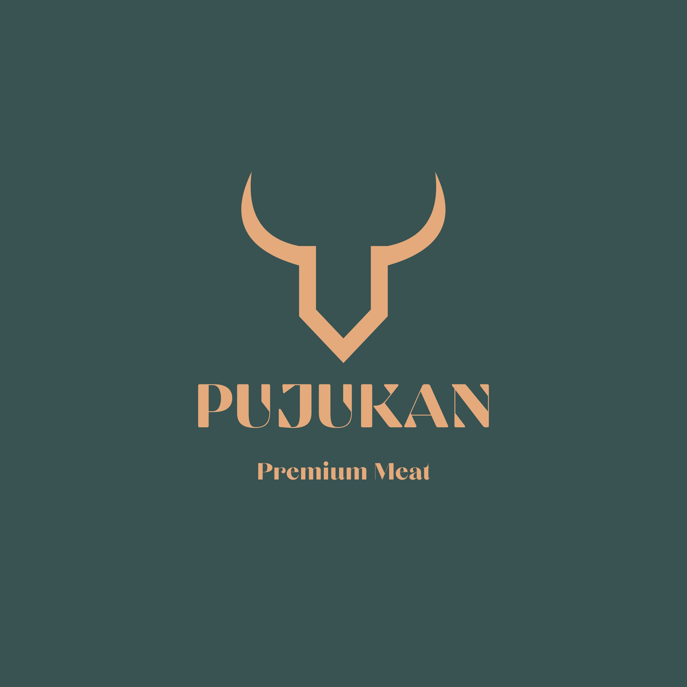
the project
Pujukan is a full-stack website created for a local meat retailer. The site gives customers a clear way to browse meat products and recipes, while giving the business a modern, easy-to-manage online presence.
toolkit
Tools: React, Vite, Supabase, PostgreSQL, i18next, Figma
my role
I developed the full-stack site, connected the product catalog to Supabase, and implemented English and Korean language support with i18next.
website preview
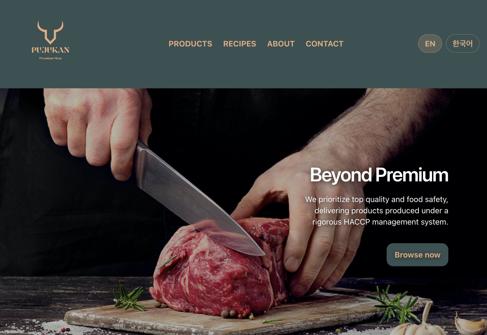
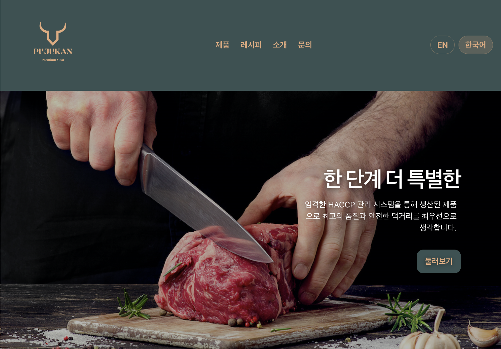
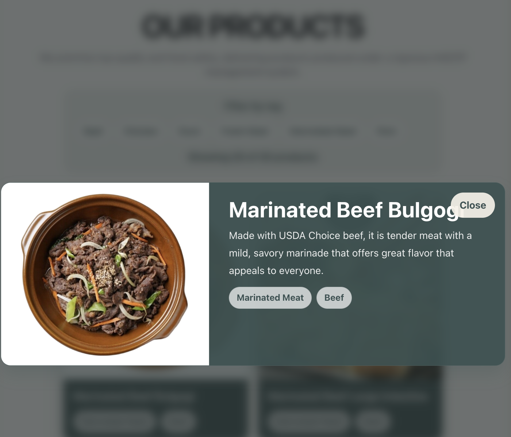
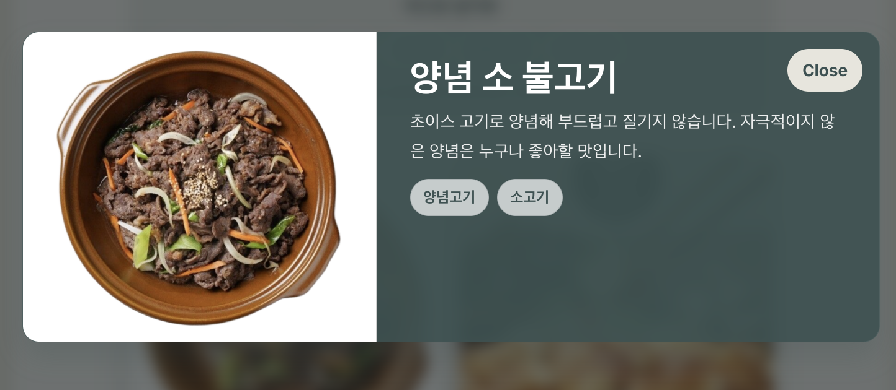
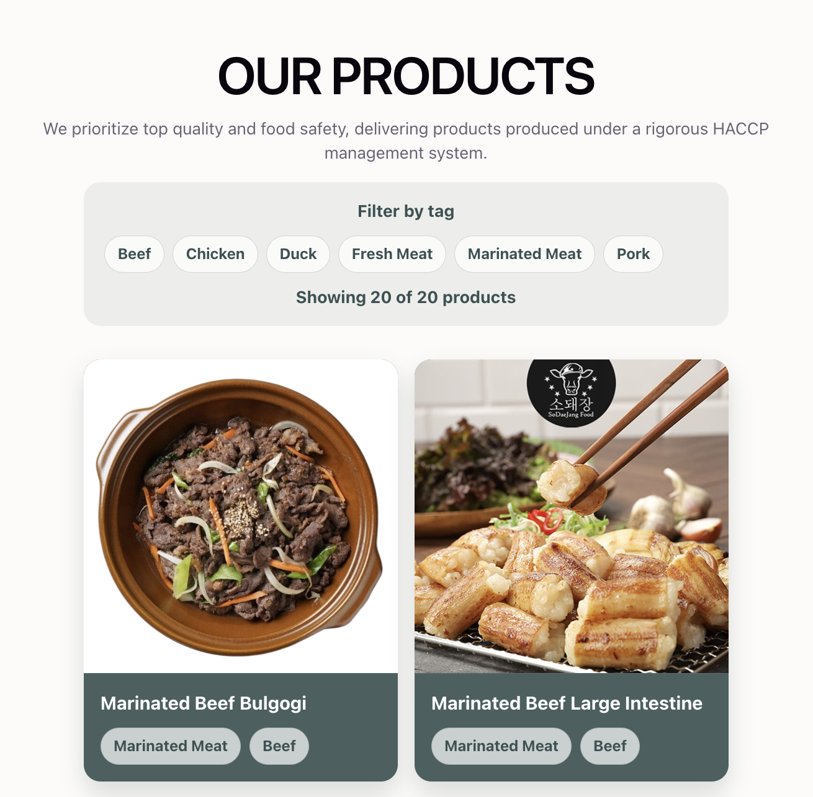
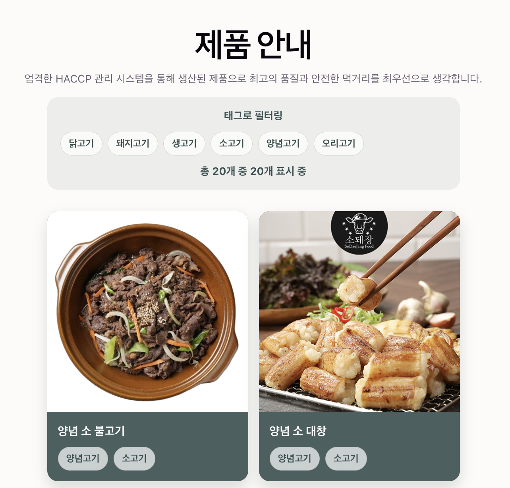
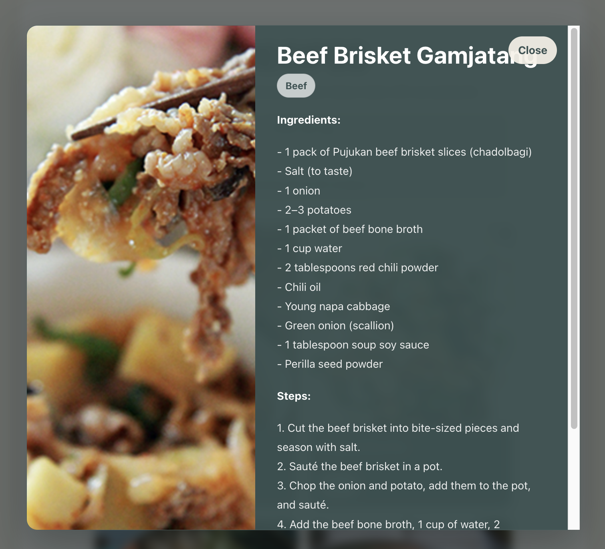
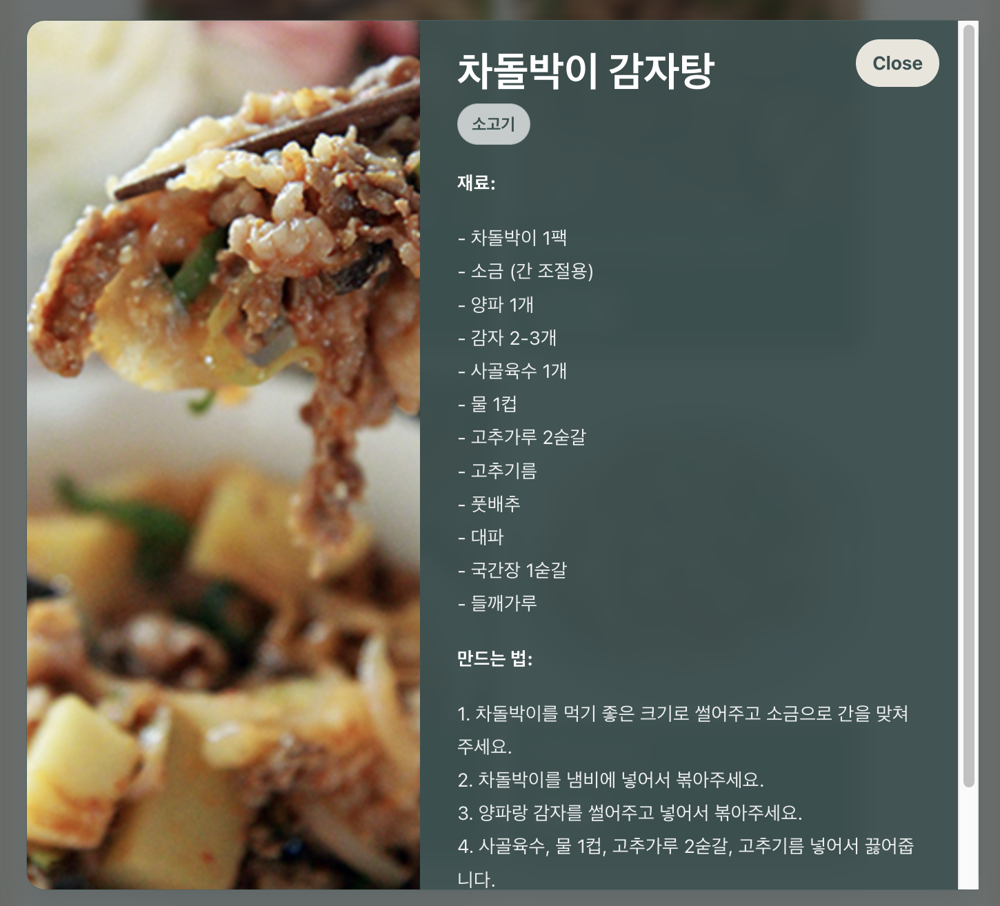
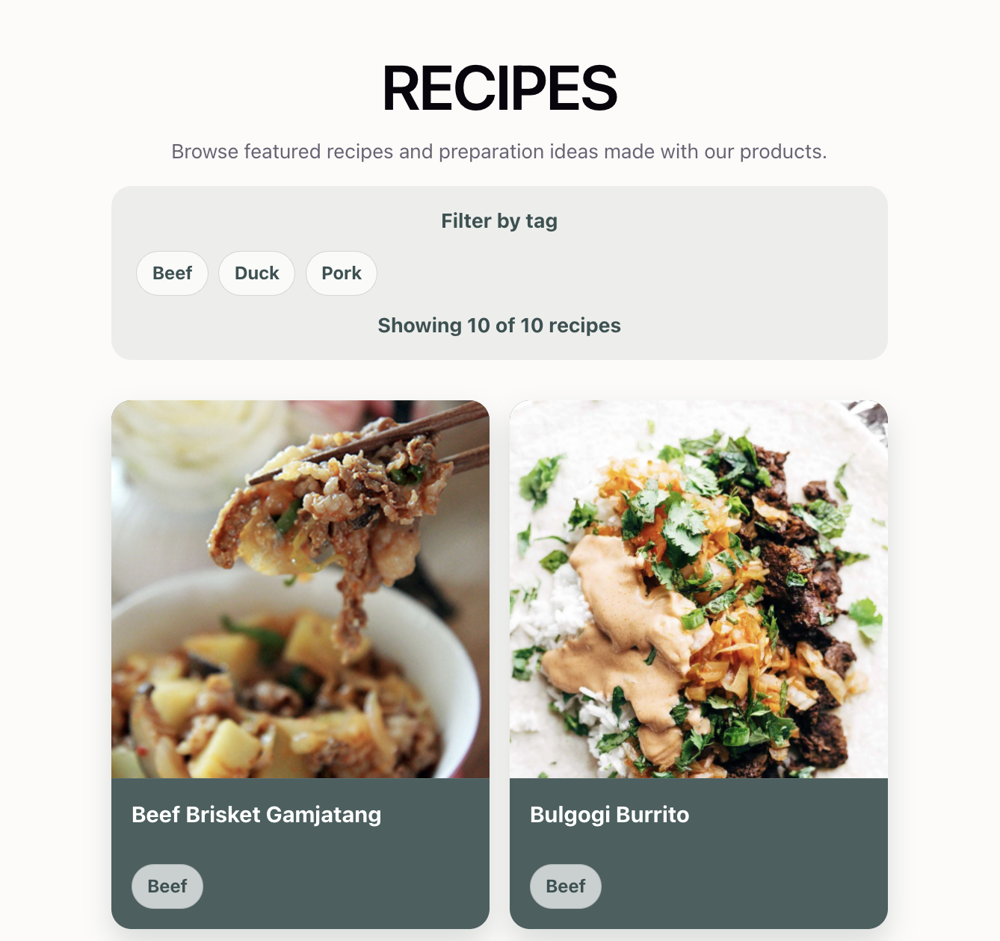
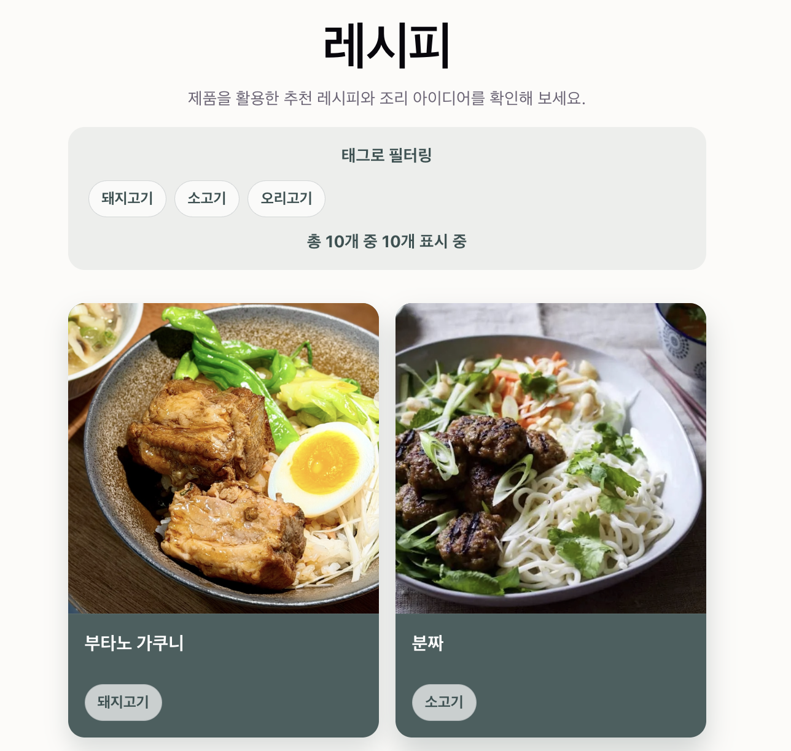